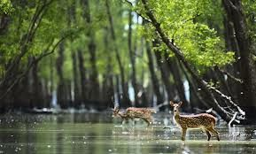

Sundorbon
The Sundarbans is a mangrove area in the delta formed by the confluence of the Ganges,
Brahmaputra and Meghna Rivers in the Bay of Bengal.
It spans from the Hooghly River in India's state of West Bengal to the Baleswar River in Bangladesh. SUNDORBONE